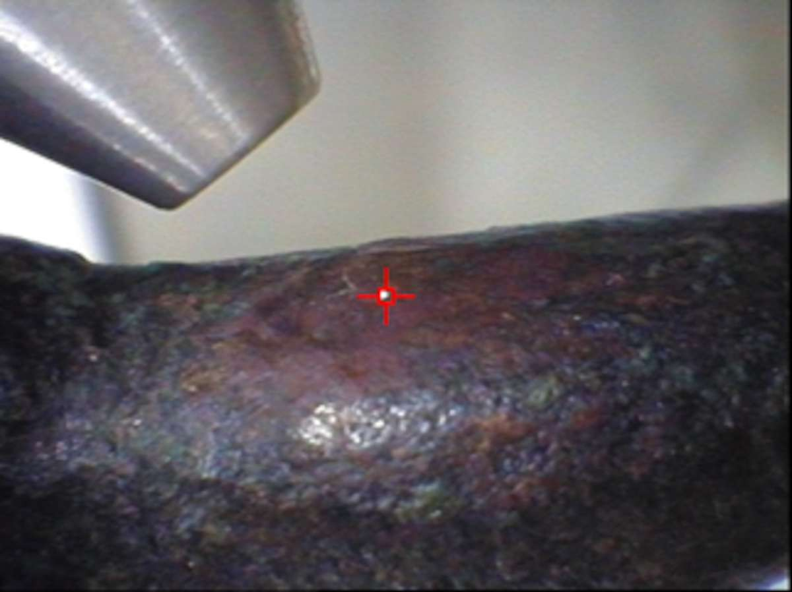

46. A Defined Protocol for In Situ Micro-XRF Compositional Analysis of Bronze Figurines from the National Museum of Damascus, Syria
- V. Kantarelou, Institute of Nuclear and Particle Physics, NCSR Demokritos, Athens
- A. G. Karydas, Institute of Nuclear and Particle Physics, NCSR Demokritos, Athens
- L. Mahfoud, Ministry of Culture, Directorate General of Antiquities & Museums, Damascus
- A. Qurdab, Ministry of Culture, Directorate General of Antiquities & Museums, Damascus
- M. Al-Saadi, Ministry of Culture, Directorate General of Antiquities & Museums, Damascus
- V. Argyropoulos, Technological Educational Institute of Athens (TEI), Department of Conservation of Antiquities & Works of Art, Athens
Abstract
During the PROMET European FP6 project, a customized micro-XRF spectrometer was transported to the National Museum of Damascus, Syria, to study its unique bronze collection. Analyses were carried out on many important artifacts, such as Late Bronze Age gilded-bronze figurines from the site of Ugarit. The paper focuses on the micro-XRF analyses of two of these bronze figurines and highlights the methodological issues regarding the optimization and validation of the micro-XRF analytical approach for ancient copper alloys. The XRF analyses of these unique Mesopotamian figurines are presented with an emphasis on best practices for micro-XRF measurement protocols, data analysis, and interpretation.
Introduction
During the PROMET European FP6 project, a micro-XRF mobile spectrometer was transported to the National Museum of Damascus, Syria, where it was applied and validated for the quantitative noninvasive analysis of unique museum metal collections across the Mediterranean region, successfully addressing archaeological and conservation questions. Given the value of these collections, transport of objects or sampling for analysis is generally not permitted. Thus, the development and validation of a reliable portable technology is critical for comparisons of analytical compositional results, especially for similar museum collections or objects housed around the world.
The mobile micro-XRF spectrometer of NCSR “Demokritos” was utilized in campaigns at the Archaeological Museum of Ancient Messene (Peloponnese), the Palace Armoury Museum in Malta, the Umm Qais and Numismatic Museums in Jordan, and the National Museum of Damascus, Syria. These studies revealed important information about their metals collections concerning the manufacturing techniques and the condition of objects from various periods, but more importantly developed a standard approach for validating the precision and accuracy of compositional data for ancient and historic copper and iron alloys, as well as gilding techniques from various periods. At the Archaeological Museum of Ancient Messene, high-tin bronze mirrors dating from the second century BC were analyzed to identify the composition of the alloy and corrosion products, as well as to characterize the reflecting gray-silverish and black-colored surface finishes of the mirrors.1 The Palace Armoury campaign included the XRF analysis of steel armor elements with emphasis on manufacturing techniques such as surface gilding.2 At Yarmouk University in Jordan, Roman copper-alloy artifacts from the Umm Qais Museum were analyzed to characterize the metal composition and corrosion products,3 while gold coins from the collection of the Numismatic Museum were also analyzed in order to identify compositional differences and elucidate the use of raw materials and processing practices through different historical periods. At the National Museum of Damascus, gilded copper and gold artifacts of the third millennium BC and from about 1500 BC were studied. The micro-XRF analysis was used for the first time to investigate the composition of copper and gold alloys and their corrosion products, the thickness of the gold foil used for the gilding, and finally to assess their state of preservation.4
The results of these studies introduced and validated universal semiquantitative criteria for the analysis of bronze artifacts using a certifiable quantification model, which was also tested during a comparison exercise organized by the Getty Museum.5 This approach is discussed here, based on the scientific examination of two unique Bronze Age figurines from the National Museum of Damascus. These gilded copper-alloy figurines represent the El god (the principal god of Ugarit) and the god Baal, both dated to the Late Bronze Age (fourteenth century BC) (fig. 46.1a–b). Compositional results of the copper alloys are presented to highlight the main problems in micro-XRF analysis of ancient bronzes, such as the heterogeneity of the alloys; the importance of using filters in the excitation path; and the production of reliable quantitative results. The scientific examination of the figurines allowed us to develop practical guidelines for micro-XRF users on how to generate good quality XRF analytical data that are representative of the bulk composition of the metal alloy.


Background
XRF spectrometry is the most popular technique for the elemental analysis of culture heritage (CH) objects,6 since it is noninvasive and can detect a wide range of elements, providing fast qualitative and in some cases validated quantitative results.
Despite the obvious advantages, the technique does have limitations, in particular when it is used for the analysis of CH metal objects utilizing an exciting X-ray beam with a size at the order of 0.1mm or below. The high spatial resolution of the exciting X-ray may produce misleading results for specific metal alloys. This is due to their microscale heterogeneity, which originates from the degree of solubility of the individual constituent elements and/or from the formation of corrosion products on the surface.7
In the case of quaternary copper (Cu) alloys with significant lead (Pb) concentration, segregation effects appear due to the immiscibility of the Cu and Pb phases, resulting in the concentration of Pb globules at the Cu grain boundaries.8 Also, surface finishing techniques may result in partial removal of Pb from the intergranular regions or to cause Pb smearing across the surface.9 In the case of bronzes, the corrosion process may alter the surface in particular due to the phenomenon of decuprification. For binary bronze alloys, the alteration of the surface is very well described by Luc Robbiola and colleagues, who proposed a factor to transform the analytical results obtained from the surface (corrosion layer) to those that represent the bulk of the metal alloy.10 Another way to achieve reliable quantitative results is to distinguish corroded from “corrosion-free” surfaces, if such exist. In the case of binary (Cu-Sn) bronzes, the ratio of Sn Kα to Lα lines of the examined alloy was suggested11 in order to access a finishing technique or/and the alteration of the original alloy. Later on, this ratio was further developed as a robust semiquantitative criterion to assess the presence or absence of surface alteration, which can be used for different XRF spectrometers and operational conditions.12 Another way to approach the original composition of the alloy is by using energy dispersive X-ray fluorescence (EDXRF) measurements combined with Monte Carlo methods.13
Another problem with the micro-XRF analysis of metals is the presence in the spectrum of peaks that energetically coincide with constituent elements’ characteristic X-rays. The surface of a “corrosion-free” metal alloy exhibits a rather polycrystalline structure. Therefore, when the X-ray tube continuum-Bremsstrahlung radiation is utilized as an excitation source, it is probable that the Bragg equation will be fulfilled at certain energies under a particular geometrical setup configuration. More specifically, according to Bragg’s law:
2d sin θ = nλ, where
d = sample crystal lattice spacing;
2θ = angle between the incident and the reflected beam from the sample; and
λ = wavelength of the incident radiation.
Thus, it might be possible that, for certain values of d and θ, the aforementioned equation may be fulfilled by an incident wavelength λ contained within the polychromatic tube spectrum. As a consequence, various undesirable peaks that correspond to different orders of diffraction will appear in the spectrum and possibly interfere with characteristic X-rays of interest. The phenomenon is significantly enhanced with the highly focused exciting beam produced by X-ray lenses in micro-XRF spectrometers. In this case, due to the well-defined excitation geometry, the Bragg condition will be fulfilled by the majority of the incident flux at a particular energy, whereas with broader beams the diffraction peaks are less pronounced. The appearance of the diffraction peaks can be identified in the XRF spectra based on the following criteria:
Usually a Bragg peak does not coincide with the tabulated energy of any characteristic X-ray, or if it does, it is not accompanied by the rest of the transition lines following the decay of an inner shell (K-, L-) hole. For example, if the energy of the diffraction peak coincides with the Κα line of one element, then depending on the presence of this particular element within the analyzed sample, the respective Κβ line either has an abnormal relative intensity with respect to the Κα line intensity or it would be completely absent.
Typically the diffraction peaks exhibit a broader shape than the typical characteristic X-ray peaks, which are modulated by the detector energy resolution and natural linewidth and not by the sample irradiation geometry.
If the sample orientation is changed slightly with respect to the exciting beam, a respective shift in their energy is observed.
A standard methodology to minimize or even eliminate the presence of Bragg peaks in the spectrum is to introduce a strong absorber between the source and the sample/spot to filter the interfering part of the exciting radiation. Usually the low energy continuum (10 k eV) has a more pronounced probability of undertaking Bragg diffraction.
In micro-XRF analysis, a polycapillary X-ray lens is usually utilized in the excitation channel to collect efficiently, propagate, and focus to a few tens of micrometers the exciting X-ray beam radiation. Nevertheless, the X-ray lens introduces major difficulties in quantification, since its transmission efficiency—being highly dependent on the transmitted X-ray energy—results in significant and not easily predicted modifications of the energy distribution of the primary tube spectrum. Although quantitative analysis by direct comparison with a certified reference material (CRM) is a rather simple and straightforward approach, it assumes the availability of CRMs with a compositional profile (matrix) similar to the unknown one. This necessity can be avoided, however, by applying for the micro-XRF quantification analysis a fundamental parameters approach that utilizes an analytical description of the lens transmission efficiency.14 This methodology is applied below for the compositional analysis of two gilded-bronze figurines from the National Museum of Damascus in Syria.
The Gilded Bronze Figurines from the Late Bronze Age
This paper focuses on the analysis of two gilded-bronze figurines using micro-XRF during the in situ campaign. The figurines belong to the Late Bronze Age (1400–1300 BC) and were discovered at the southern area of Ugarit, which was first excavated in 1929 by French archaeologists. Site research suggests that the city acted as a link between the Near East and the ancient Mediterranean world.15 Ugarit became the center of interaction between Egypt, Crete, Cyprus, and Anatolia, promoting an exchange of the earliest artistic styles within the ancient world. These statues represent ancient gods: the first one represents the El god (inv. RS23) and the other, the Baal god (inv. 3572) (see fig. 46.1). The El god figurine is in a seated position with its right hand raised, apparently in blessing, and its crown resembles the crown of Osiris. The stance of the Baal god is borrowed from Egyptian images of triumphant kings striding over their fallen enemies.16 At that time, Ugarit art was highly influenced by Egyptian art, as can be observed in the examined artifacts. In another paper,17 we discussed the methodology for the micro-XRF analysis of the gilded parts of the objects. The examination of gilded areas showed the use of the foil gilding technique, determined the composition of the gilded areas, and revealed the use of different gold sheets on these objects.
Measurement Setup
The scientific examination of the bronze figurines was carried out by a portable micro-XRF spectrometer (fig. 46.2). This instrument was developed based on a commercial spectrometer (Bruker-Nano ARTAX) with optimized features regarding the design of the spectrometry head and the lens transmission efficiency at high energies (20 k eV). The spectrometer probe consists of an X-ray microfocus Rh-anode tube (spot size 50 μm x 50 μm, max 50 kV, max 1 mA, 30W maximum power consumption, Be window 0.2 mm thickness); and a polycapillary X-ray lens as a focusing optical element (IFG), with focal distance equal to 21.2 mm and with spatial resolution of ~40–100 μm. The X-ray detection chain consists of an electrothermally cooled 10 mm2 silicon drift detector (X-Flash, 1000B) with FWHM equal to 146 eV at 10 kcps coupled with a digital signal processor. A color CCD camera (ca. 13x magnification) is used for sample illumination and a dimmable white LED to produce a laser spot. Three different stepping motors, coupled with the spectrometer head, allow its movement in three dimensions to facilitate 2D scanning measurements. Finally, a portable supporting stand for the micro-XRF spectrometer (developed in-house) allows its vertical movement in a range of about 50 cm. The portable stand can be easily disassembled, packed, and transported to a museum or a site.

Results/Discussion
The Problem of Heterogeneity: The microscale heterogeneity of CH metals was validated during the PROMET campaign and was reported in the book The Preservation of Metal Museum Collections from the Mediterranean Region: The PROMET Approach.18 In this study, the examination of ancient copper alloys highlights the necessity of area mapping to deduce mean values of elemental intensities compared to single-spot micro-XRF analysis. It is very characteristic that the homogeneity of the SRM BCR-691 copper alloys is ensured only for a beam-spot size at the order of 5 mm due to their microscale heterogeneity. Typical copper alloys were analyzed by performing micro-XRF mapping in small (~0.5 x 0.5 mm2) and large (~5 x 5 mm2) areas. Table 46.1 reports the systematic area scans performed for the copper BCR-691Α alloy. The elemental intensities deduced from each area scan were averaged and the respective standard deviations (STDMV %) are presented. In addition, the table gives the standard deviation (%) of the mean value determined by averaging the individual mean values of all the area scans for a specific elemental intensity.
| Scans | Step (mm) | Area (mm2) | No. of spots | Standard Deviation of the Mean Value (STDMV %) of the elemental intensities measured from area scans | ||||
|---|---|---|---|---|---|---|---|---|
| Cu-Kα | Zn-Kα | Sn-Kα | Sn-Lα | Pb-Lβ | ||||
| 1 | 0.02 | 0.14 x 0.14 | 64 | 6 | 13 | 7 | 14 | 68 |
| 2 | 0.02 | 0.14 x 0.14 | 64 | 7 | 6 | 20 | 18 | 30 |
| 3 | 0.02 | 0.24 x 0.24 | 156 | 6 | 8 | 15 | 16 | 59 |
| 4 | 0.02 | 0.32 x 0.32 | 289 | 6 | 12 | 20 | 19 | 62 |
| 5 | 0.02 | 0.5 x 0.5 | 110 | 6 | 9 | 21 | 22 | 69 |
| 6 | 0.08 | 0.8 x 0.8 | 121 | 8 | 18 | 22 | 22 | 75 |
| 7 | 0.1 | 1 x 1 | 110 | 7 | 14 | 12 | 13 | 60 |
| 8 | 0.2 | 3 x 3 | 225 | 10 | 19 | 15 | 16 | 75 |
| 9 | 0.25 | 5 x 5 | 441 | 10 | 22 | 20 | 20 | 70 |
| 10 | 1.0 | 5 x 5 | 36 | 9 | 18 | 22 | 21 | 63 |
| 4.2 | 5 | 5 | 4 | 31 | ||||
Given these results, what would be an appropriate measurement methodology that would generate representative results of the metal alloy bulk composition? The following practical guidelines should be taken into account:
The scanning micro-XRF analysis should be conducted in at least three different areas ~1 mm x 1mm or larger, containing an adequate number of spot measurements (30) with step size equal to or slightly larger than the spatial resolution of the exciting beam (~0.1 mm in our case), and the respective mean average elemental intensities should be averaged.
If a scanning mode of analysis cannot be applied, as many single-spot measurements as possible should be taken at different areas of the analyzed surface to deduce mean elemental intensities that represent more accurately the bulk composition of the alloy.
The Need for Filtered Excitation: As discussed above, the surface of a bronze object exhibits a polycrystalline structure that may produce parasitic XRD peaks on the XRF spectrum that sometimes coincide with the energy region in which characteristic X-ray lines appear. The use of a filter in the excitation path can eliminate the influence of this phenomenon. Another advantage to using a filter is the improvement of peak-to-background at the energy region where minor or even trace elements (such as zinc, arsenic, or selenium) may be expected, and also the reduction of pile-up peaks.
As an example, a single-spot measurement was taken on the surface of the El-god figurine using unfiltered versus filtered excitation. In the case of bronze alloy analysis, the selected filter consisted of a sandwich of the following materials: cobalt (Co) (17.7 ± 1.3) μm, titanium (Ti) (23.64 ± 0.18) μm, and palladium (Pd) (11.3 ± 0.3) μm.
Both spectra (fig. 46.3) showed that the statue is made of a binary copper-tin alloy with some traces of iron, zinc, and arsenic. In the case of the filtered excitation, the background was reduced, and the presence of selenium and lead traces in the alloy was revealed. The detection of trace elements is extremely important in archaeometric studies, because it can give clues about the provenance of raw materials and the manufacturing process.

Surface Corrosion Products: The identification of a patina layer or surface corrosion products in XRF analysis relies on the detection of particular elements, mostly of elements with low atomic number like sulfur (S) or chlorine (Cl), which are signs/fingerprints of certain types of copper- or tin-related corrosion products. Another criterion is applicable when medium atomic number elements like tin are included in the bulk composition of the metal alloy. For example, in bronze alloys the variation of the (L/K) intensity ratio for the Sn-characteristic X-rays among different corroded and corrosion-free areas can indicate the presence of an alteration of the original alloy surface. The intensity of L X-ray lines, due to their significantly lower energy relative to the K-lines, is mostly affected by the at-depth distribution of the element, that is, whether it is on the surface layer or below; thus, a higher value probes a surface location of tin, whereas a lower- or negligible-value L-intensity gives direct evidence that a surface layer without tin acts as an absorbing layer. Moreover, in order to probe efficiently the elements S, Cl, and Sn L-X-rays, an unfiltered tube radiation is suitable as an exciting X-ray source. It should be stressed that the XRF analysis cannot identify the mineralogical type of a corrosion product, as the XRD or FTIR analysis can. However, through the elemental analysis, XRF can reveal elemental associations compatible with particular types of corrosion products.
An area map was performed at the back of the El god figurine (see fig. 46.1a). The black quadrangle in figure 46.4a defines the area of analysis, which shows both black and green coloration. The measurement conditions were set at 50 kV, 600 μA, 30 s/step, and 0.1 mm/step, total area of analysis 0.5 × 0.8 mm2 (42 measurements). In figures 46.4b–c, the Cu Kα and the ratio of Sn Lα/Kα elemental intensities in each analyzed area are presented. The warm colors correspond to higher intensity values: therefore in the green region (on the right side of the scan) the increment of Cu Kα line points to the formation of a green copper-corrosion product (possibly malachite due to absence of S and Cl from the recorded spectra); whereas in the black area (down and left) the increment of Sn characteristic lines reveals the formation of a black tin corrosion products (possibly tin oxides).


Certifiable Quantitative Results: The XRF screening of reddish-brown areas on the surface of the Baal god figurine (see for example photos of three selected areas in table 46.2) could indicate (in principle) corrosion-free areas as opposed to those with the presence of reddish corrosion products (most likely cuprite). It is not possible to discriminate such areas by visual examination alone. This new methodology for screening was previously proposed,19 wherein the relative ratio of Sn Kα/Lα to the respective value obtained by a reference binary Cu-Sn alloy was used as a criterion for identifying an area altered by corrosion. This ratio was theoretically calculated and experimentally found to be rather constant, being independent of the tin content, the measurement/excitation conditions (filtered/unfiltered excitation, operational voltage, irradiation geometry, micro- or milli-beam), and the type of the XRF spectrometer (anode material, detection system, etc.). Since the established criterion was fulfilled for only one spot (2b in table 46.2), quantitative results obtained for other analyzed spots were abandoned. In order to have an idea of the errors that could be introduced in the quantitative results for the bronze alloy, table 46.2 reports also the elemental concentrations as deduced from the analytical micro-XRF data obtained for spots (2a) and (2c). It is clear that without incorporating the universal screening criterion developed for the bronze alloys, the compositional results could indicate much higher Sn concentration (260% and 156%, respectively) than the actual value, suggesting a different manufacturing technology.
| Photo of the analyzed area | Analyzed area | Concentration (%w.w) | |
|---|---|---|---|
| Cu | Sn | ||
 | 2a | 89.2 ± 1.0 | 9.82 ± 0.5 |
 | 2b | 92.5 ± 1.0 | 6.32 ± 0.3 |
|  | 2c | 81.9 ± 1.0 | 16.4 ± 0.8 |
Conclusions
Within the PROMET project, a portable micro-XRF spectrometer, based on an industrial prototype but with custom-selected hardware components and measurement head, was utilized on two bronze figurines housed at the National Museum of Damascus. Optimized analysis protocols were developed with the aim of achieving an accurate and precise compositional analysis of the Cu alloys, overcoming spectral interferences that arise due to the polycrystalline nature of the alloy’s surface. Filters for the detection of bronze alloys should first be tested and the minimum representative area of analysis should be examined and specified on reference bronze alloys. Finally, the quantification procedure should only be used on corrosion-free areas in order to produce reliable analytical results. This paper outlined this methodological approach to carry out verifiable and reproducible compositional analysis.
Acknowledgments
We would like to thank Mr. Eythimios Bistekos for his technical assistance during the in situ campaign in Damascus, Syria, and Dr. Demetrios Anglos for providing us with the reference bronze standards. We are also grateful to Dr. Maamoun Abdulkarim, Mr. Maher Azar, the staff of the Ministry of Culture of Syria, and the curators of the National Museum of Damascus for granting us the permission to study the unique gilded bronze figurines, for their hospitality, and for overall assistance during our campaign.
Notes
- Giannoulaki et al. 2007, Kantarelou et al. 2007a, Kantarelou et al. 2007b. ↥
- Degrigny et al. 2007. ↥
- Arafat et al. 2013. ↥
- Kantarelou et al. 2015. ↥
- Heginbotham et al. 2010. ↥
- Karydas et al. 2007, Potts and West 2008, Trentelman et al. 2010. ↥
- Figueiredo et al. 2013, Ferretti 2014, Nicholas and Manti 2014. ↥
- Ingo et al. 2004. ↥
- Ingelbrecht et al. 2001. ↥
- Robbiola et al. 1998. ↥
- Kantarelou et al. 2007a, Gianoncelli and Kourousias 2007. ↥
- Kantarelou et al. 2015. ↥
- Manso et al. 2015. ↥
- Kantarelou and Karydas 2016. ↥
- Aruz, Benzel, and Evans 2008. ↥
- Al Moadin and Diez-Fuentes 2006. ↥
- Kantarelou et al. 2015. ↥
- Karydas, Anglos, and Harith 2008. ↥
- Kantarelou et al. 2015. ↥
Bibliography
- Al Moadin and Díez-Fuentes 2006
- Al Moadin, M., and H. Díez-Fuentes. 2006. Highlights of the National Museum of Damascus. Lebanon: Media Minds LLC.
- Arafat et al. 2013
- Arafat, A., M. Naes, V. Kantarelou, N. Haddad, A. Giakoumaki, V. Argyropoulos, D. Anglos, and A. G. Karydas. 2013. “Combined in situ Micro-XRF, LIBS and SEM-EDS Analysis of Base Metal and Corrosion Products for Islamic Copper Alloyed Artefacts from Umm Qais Museum.” Journal of Cultural Heritage 14: 261–69.
- Aruz, Benzel, and Evans 2008
- Aruz, J., K. Benzel, and J. M. Evans, eds. 2008. Beyond Babylon: Art, Trade, and Diplomacy in the Second Millennium B.C. New York: Metropolitan Museum of Art.
- Degrigny et al. 2007
- Degrigny, C., A. G. Karydas, S. Golfomitsou, V. Kantarelou, Ch. Zarkadas, and D. Vella. 2007. “Methodology for the in-situ Analyses of Historic Steel Armours with Portable Milli- and Micro-XRF Spectrometers.” In METAL-07, vol. 2: Innovative Investigation of Metal Artifacts, 26–34. Amsterdam: Rijksmuseum.
- Ebel 1999
- Ebel, H. 1999. “X-ray Tube Spectra.” X-Ray Spectrometry 27: 255–66.
- Ferretti 2014
- Ferretti, M. 2014. “The Investigation of Ancient Metal Artefacts by Portable X-ray Fluorescence Devices.” Journal of Analytical Atomic Spectrometry 29: 1753–66.
- Figueiredo et al. 2013
- Figueiredo, E., M. Fatima Araujo, J. C. Silva, and R. Raquel Vilaca. 2013. “Characterisation of a Proto-historic Bronze Collection by Micro-EDXRF.” Nuclear Instruments and Methods in Physics Research B 296: 26–31.
- Giannoulaki et al. 2007.
- Giannoulaki, M., V. Argyropoulos, G. P. Michalakakos, Th. Panou, V. Kantarelou, C.. Zarkadas, A. G.. Karydas, V. Perdikatsis, and Ch. Apostolaki. 2007. “A Conservation Survey of Museum Metals Collections: A Case Study of Ancient Messene Museum, Greece.” In METAL-07, vol. 1: When Archaeometry and Conservation Meet, 67–72. Amsterdam: Rijksmuseum.
- Gianoncelli and Kourousias 2007
- Gianoncelli, A. and G. Kourousia. 2007. “Limitations of Portable XRF Implementations in Evaluating Depth Information: An Archaeometric Perspective.” Applied Physics A 89: 857–63.
- Heginbotham et al. 2010
- Heginbotham, A., A. Bezur, M. Bouchard, J. M. Davis, K. Eremin, J. H. Frantz, L. Glinsman, L. A. Hayek, D. Hook, V. Kantarelou, A. G.. Karydas, L. Lee, J. Mass, C. Matsen, B. McCarthy, M. McGath, A. Shugar, J. Sirois, D. Smith, and R. J. Speakman. 2010. “An Evaluation of Inter-laboratory Reproducibility for Quantitative XRF of Historic Copper Alloys.” In Proceedings of the International Conference on Metal Conservation, METAL 2010, ed. P. Mardikian, C. Chemello, C. Watters, and P. Hull, 178–88. Charleston, SC: Clemson University.
- Ingelbrecht et al. 2001
- Ingelbrecht, C., A. Andriaens, and E. A. Maler. 2001. “The Certification of Arsenic, Lead, Tin and Zinc (Mass Fractions) in Five Copper Alloys, BCR-691.” EUR 19778/1EN.
- Ingo et al. 2004
- Ingo, G. M., E. Angelini, T. de Caro, G. Bultrini, and I. Calliari. 2004. “Combined Use of GDOES, SEM + EDS, XRD and OM for the Microchemical Study of the Corrosion Products on Archaeological Bronzes.” Applied Physics A 79: 199–203.
- Kantarelou et al. 2007a
- Kantarelou, V., Ch. Zarkadas, A. Giakoumaki, M. Giannoulaki, A. G. Karydas, D. Anglos, and V. Argyropoulos. 2007. “A Novel Approach on the Combined in-situ Application of LIBS and μ-XRF Spectrometers for the Characterization of Copper Alloy Corrosion Products.” In METAL-07, vol. 2: Innovative Investigation of Metal Artifacts, 35–41.
- Kantarelou et al. 2007b
- Kantarelou, V., A. G. Karydas, Ch. Zarkadas, M. Giannoulaki, and V. Argyropoulos. 2007. “Micro-XRF Analysis of High Tin Bronze Mirrors at the Museum of Ancient Messene in Greece.” In Proceedings of the International Conference on Conservation Strategies for Saving Indoor Metallic Collections (CSSIM), ed. V. Argyropoulos, A. Hein, and M. A. Harith, 93–99. Athens: Department of Conservation of Antiquities and Works of Art.
- Kantarelou et al. 2015
- Kantarelou, V., A. G. Karydas, D. Sokaras, L. Mahfouz, A. Qurdab, M. Al-Saadi, M. Giannoulaki, and V. Argyropoulos. 2015. “In situ Scanning Micro-XRF Analyses of Gilded Bronze Figurines at the National Museum of Damascus.” Journal of Analytical Atomic Spectroscopy 30: 1787–98.
- Kantarelou and Karydas 2016
- Kantarelou V., and A. G. Karydas. 2016. “A Simple Calibration Procedure of Polycapillary Based Portable Micro-XRF Spectrometers for Reliable Quantitative Analysis of Cultural Heritage Materials.” X Ray Spectrometry 45: 85–94.
- Karydas 2007
- Karydas, A. G. 2007. “Application of a Portable XRF Spectrometer for the Non-Invasive Analysis of Museum Metal Artefacts.” Annali di Chimica 97: 419–32.
- Karydas, Anglos, and Harith 2008
- Karydas, A. G., D. Anglos, and M. A. Harith. 2008. “Mobile Micro-XRF and LIBS Spectrometers for Diagnostic Micro-Analysis of Ancient Metal Objects.” In Metals and Museums in the Mediterranean: Protecting, Preserving and Interpreting, ed. V. Argyropoulos, 141–77. Athens: Department of Conservation of Antiquities and Works of Art.
- Manso et al. 2015
- Manso, M., N. Schiavon, I. Queralt, A. M. Arruda, J. M. Sampaio, and A. Brunetti. 2015. “Alloy Characterization of a 7th Century BC Archeological Bronze Vase Overcoming Patina Constraints Using Monte Carlo Simulations.” Spectrochimica Acta B 107: 93–96.
- Nicholas and Manti 2014
- Nicholas, M., and P. Manti. 2014. “Testing the Applicability of Handheld Portable XRF to the Characterisation of Archaeological Copper Alloys.” In Proceedings of ICOM-CC 17th Triennial Conference, Melbourne, ed. J. Bridgeland. International Council of Museums.
- Potts and West 2008
- Potts, P. J., and M. West, eds. 2008. Portable X-ray Fluorescence Spectrometry: Capabilities for In Situ Analysis. Cambridge: RSC Publishing.
- Robbiola et al. 1998
- Robbiola, L., J. M. Blengino, and C. Fiaud. 1998. “Morphology and Mechanisms Formation of Natural Patinas on Archaeological Cu-Sn Alloys.” Corrosion Science 40: 2083–111.
- Trentelman et al. 2010
- Trentelman, K., M. Bouchard, M. Ganio, C. Namowicz, C. Schmidt Patterson, and M. Walton. 2010. “The Examination of Works of Art Using in situ XRF Line and Area Scans.” X-Ray Spectrometry 39: 159–66.